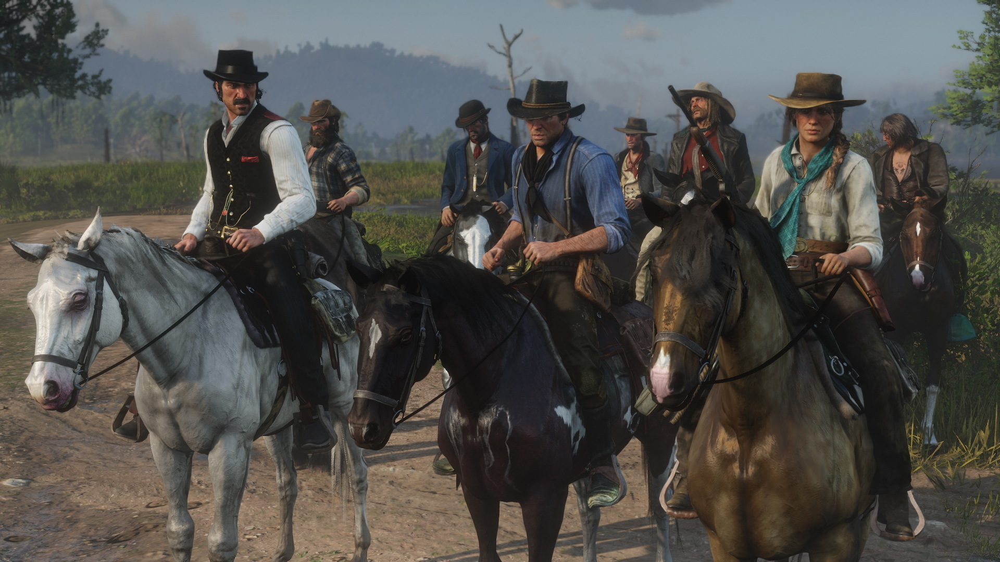

La historia de Red Dead Redemption está ambientada en la frontera mexicano-estadounidense, en el año 1911, y está protagonizada por John Marston, un antiguo forajido perteneciente a una peligrosa banda liderada por un forajido llamado Dutch van Der Linde, que es chantajeado por unos agentes federales, Edgar Ross y Archer Fordham, de la Oficina Federal de Investigación para que rastree y elimine a su excamarada de banda, Bill Williamson, para volver a ver a su familia y remontar su vida en su rancho ya que los federales secuestraron a su familia como una forma de asegurar el cumplimiento de la misión a la cual John fue obligado a participar.
Marston llega a la estación de ferrocarril de Armadillo, en el estado de New Austin. Tras localizar al contacto que los agentes federales habían contratado para guiar a Marston, ambos se dirigen a Fort Mercer, un antiguo fuerte del ejército abandonado, donde se encuentra atrincherado Bill Williamson y su propia banda. En su primer encuentro después de varios años, Marston es encañonado, desde lo alto de los muros, por varios miembros de la banda, incluido Williamson, y tras una breve charla tratando de persuadir a su antiguo compañero para que se entregue a las autoridades, los hombres de Williamson disparan a Marston, que resulta malherido y cae inconsciente. Sin embargo, una joven ranchera de Hennigan's Stead, Bonnie MacFarlane, lo recoge y lo lleva a su rancho para curar sus heridas. En el Rancho MacFarlane, Marston se recupera y mientras realiza varias labores en la granja de Bonnie como forma de agradecimiento por salvar su vida, John comienza a ultimar los preparativos para atrapar a Williamson, pues viaja con Bonnie a Armadillo donde ésta le presenta al comisario de la ciudad, Leigh Johnson. El comisario promete ayudar a Marston con su misión si este colabora antes en mantener el orden en la zona. Durante su estancia en New Austin, John Marston conoce a una serie de personajes que, de una forma u otra, lo ayudan a progresar en su objetivo, siendo algunos de estos Nigel West Dickens, un estafador de poca monta que promete curas milagrosas por todo el estado; Seth Briars, un enfermo buscador de tesoros; o los vagabundos inmigrantes Irish, Welsh y French. A medida que John ayuda al comisario Johnson, ambos logran capturar a Norman Deek, segundo al mando dentro de la banda de Bill Williamson quien al enterarse de que John estaba aún con vida y se ocultaba en el rancho de los Macfarlane, decide atacar la propiedad provocando un incendio del cual Marston logra rescatar a los animales del rancho, pero Bonnie sería secuestrada y John tras una fuerte escaramuza, lograría rescatarla.
Después de hacer diferentes favores a un buen número de personas en New Austin, Marston, el comisario y otros compañeros preparan el asalto al fuerte donde se atrinchera Williamson con sus hombres. Lamentablemente, y después de la masacre que allí se lleva a cabo, Marston se entera de que su objetivo logró escapar la noche antes al ataque, abandonando su banda y huyendo a México para reunirse con otro viejo camarada de banda de Marston, Javier Escuella. Marston informa de lo sucedido a los agentes federales, pero estos le obligan a seguir el rastro de Williamson y, ya de paso, capturar también a Javier. Es Irish quien ayuda a Marston a cruzar la tensa frontera hacia México mediante una balsa a través del río San Luis.

Ya en Nuevo Paraíso, territorio fronterizo mexicano, Marston conoce a Landon Ricketts, una leyenda del pistolerismo que vive retirado en la localidad de Chuparosa. A través de Ricketts, Marston se introduce en el movimiento revolucionario mexicano gracias a las amistades que entabla con la joven profesora Luisa Fortuna y Abraham Reyes, el líder de los sublevados mexicanos. Sin embargo, Marston, en un primer momento, colabora con el coronel Agustín Allende y el ejército mexicano. Es decir, los enemigos de los rebeldes. El protagonista continúa con la búsqueda de sus hombres, por lo que el capitán Vicente De Santa y el coronel Allende le ofrecen su ayuda a cambio de que él colabore en sofocar las revueltas populares. Posteriormente, De Santa asegura a Marston que tiene a Williamson y Escuella capturados en la iglesia de Chuparosa y se dirigen por ellos. Sin embargo, al llegar a la iglesia, De Santa tiende una emboscada a Marston, pero acaba siendo liberado por Reyes, que conocía los planes oficialistas. Marston termina uniéndose definitivamente a Reyes en el bando revolucionario, asesina al capitán De Santa y logra capturar/asesinar Notas a Escuella, gracias a la ayuda de sus aliados mexicanos, entregándoselo a los federales en la frontera/o informándoles de su muerte dependiendo de la decisión que tome el jugador. Tras lograr la victoria revolucionaria, y en pleno asalto al palacio Allende, en la capital Escalera, el gobernador y Williamson, que se encontraba bajo su amparo, huyen en carromato del lugar y escoltados por soldados fieles al régimen. Pero Marston y Reyes los alcanzan y son asesinados.
Marston se termina reuniendo en la frontera con Edgar Ross y Archer Fordham y, cuando parecía que por fin iba a recuperar su vida y a su mujer e hijo, le informan de que su trabajo para el Gobierno aún no ha terminado. Como último favor antes de recuperar su vida, debe eliminar a Dutch Van Der Linde, el líder de la antigua banda de forajidos de la que Marston, Williamson y Escuella eran miembros 12 años atrás y que había causado tantos problemas en el pasado. Marston viaja a Blackwater, donde los federales tienen su sede en West Elizabeth. Una ciudad en pleno desarrollo industrial. Allí, descubre que su excompañero actualmente lidera una banda de criminales, mayoritariamente compuesta por indios americanos. Tras varias escaramuzas participando junto al Ejército, Marston arrincona a Van Der Linde y a lo que queda de su banda en su fortaleza de Nekoti Rock, el cual, tras una infructuosa huida, se suicida en presencia de su excompañero, cayendo montaña abajo. El Gobierno entrega a Marston su familia y regresa a su granja de Beecher's Hope.
Tras un breve tiempo de aparente calma y normalidad, Edgar Ross asalta el rancho de Marston junto a otros agentes y el Ejército. Tras un duro tiroteo, John Marston logra que su mujer e hijo que huyan del lugar desde la parte de atrás del granero de su rancho. Estaba rodeado y sin posibilidad de escapatoria. Lo querían a él. Después de ver a través de las rendijas del portón de su granero John respira hondo y así, decide descubrirse y plantarles cara en solitario, muriendo asesinado a sangre fría tras ser fusilado por el pelotón de federales y militares que le esperaban alrededor del granero.
Tras esto, la historia avanza hasta el año 1914. Año en el que muere la viuda de Marston, Abigail. Jack Marston, el hijo de 19 años del protagonista, toma el relevo de la trama. Está dispuesto a vengar a su familia y por eso se va a Blackwater, con el fin de encontrar a Edgar Ross. En la estación de tren, le pregunta a un agente del Gobierno el paradero de Ross y este le dice que se había jubilado hacía un año y que había oído que se había mudado a una cabaña frente al Lago Don Julio con su mujer. Jack se dirige hacia allí y encuentra a su esposa, que le asegura que su marido se encuentra cazando patos con su hermano Phillip en el río San Luis, al otro lado de la frontera. Jack se parte hacia allá, encontrando a su hermano en un pequeño campamento, que le dirige en dirección a Ross, al borde del río. Una vez lo encuentra, se presenta como el hijo de John Marston y le recrimina su crueldad y traición en el asesinato de su padre. Edgar Ross se muestra soberbio y lo amenaza. No parece arrepentido por lo sucedido. Jack le advierte que no irá a ningún sitio y se le reta a un duelo. Así es como Edgar Ross muere a manos de Jack Marston, cumpliéndose la venganza familiar. Tras esto, Jack recibe las últimas ediciones de los periódicos donde se pueden leer los destinos de los personajes que su padre conoció en su aventura. Irish se mató accidentalmente en Thieves' Landing; el comisario Leigh Johnson se jubiló tras una fiesta de despedida en Armadillo, donde aseguró no volver jamás; Seth logró encontrar el tesoro que buscaba y se convirtió en multimillonario; Landon Ricketts falleció a causa de su avanzada edad; Abraham Reyes se convirtió, irónicamente, en un tirano gobernador y presidente de México, todo contra lo que había luchado en su etapa rebelde; y Harold McDougal fue expulsado de Yale cuando trató de devorar a un compañero de estudios para un experimento científico.
- Ambientación
Red Dead Redemption se sitúa en tres estados ficticios: New Austin, Nuevo Paraíso y West Elizabeth. Todos ellos están localizados en el territorio de la frontera entre los Estados Unidos y México, en el año 1911, en pleno declive del salvaje oeste y de los prototipos de vaqueros y forajidos que lo conforman, provocado por los avances tecnológicos, industriales, científicos y en materia de infraestructuras, con la implantación del ferrocarril como máximo exponente.
Cada uno de los estados dispone de una ambientación única que le hace distinto del resto. El estado de New Austin está formado por cuatro condados: Cholla Springs, Río Bravo, Gaptooth Ridge y Hennigan's Stead. Esta región está basada en los clásicos territorios del oeste estadounidense y su flora y fauna es muy particular. Abundan las llanuras desérticas, poblados, saloons, ranchos o animales como los coyotes, lobos, armadillos o pumas, entre otros. Nuevo Paraíso es parte del territorio mexicano, con sus propios accidentes geográficos característicos como un clima cálido y seco, terrenos más áridos y rojizos, poblados y construcciones edificados a base de piedra blanca y una fauna similar a la de New Austin. Está dividida en tres regiones: Punta Orgulloso, Perdido y Diez Coronas.
Por su parte, el territorio septentrional de West Elizabeth es el estado más industrializado y donde la civilización moderna se hace más patente, especialmente en la sede del estado, Blackwater, que posee edificios de reciente construcción, parques, vehículos motorizados o calles pavimentadas. Su clima es opuesto a los anteriores territorios, pues abundan las praderas, bosques y montañas nevadas. Su fauna, por otra parte, incluye especies únicas como bisontes u osos pardos. Este estado está dividido en dos condados: Tall Trees y Great Plains.